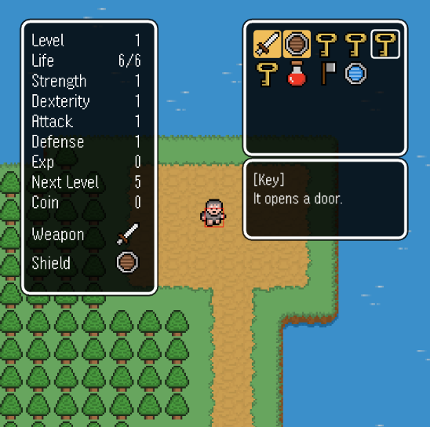
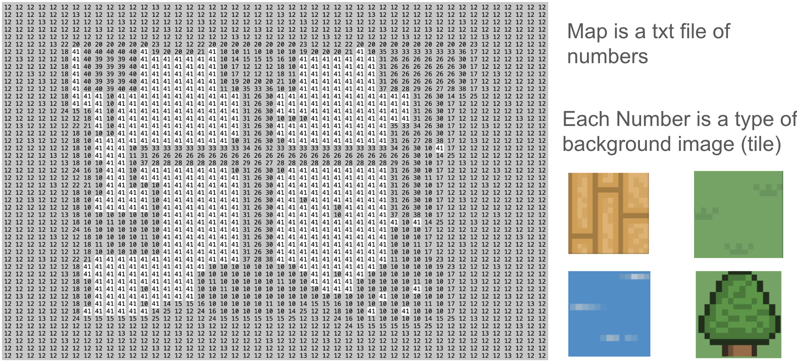
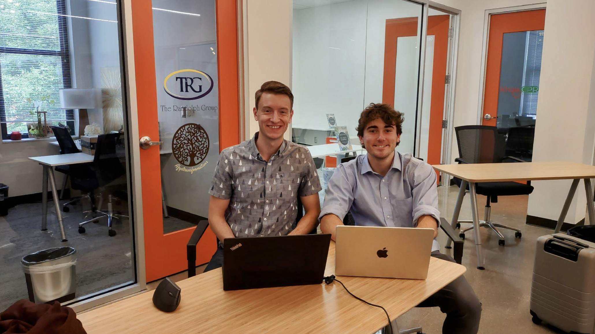
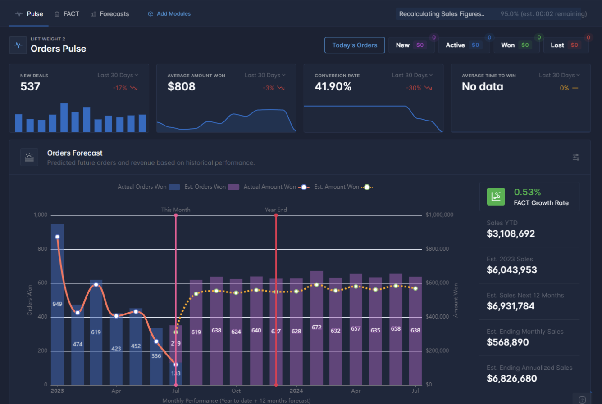

Where I've Been
My experience has put me in a mix of professional environments, from office-based internship work to collaborative technical settings on campus. Through my internships, I gained experience working inside structured teams, communicating clearly, adapting to existing workflows, and contributing to projects where reliability and organization mattered.
Outside the office, my time in the Computer Science Club has strengthened the way I work with other people on technical ideas. I have learned how to contribute in group discussions, build alongside peers, and stay productive whether I am solving a problem independently or helping move a team project forward.


In the Computer Science Club, I worked with a team of student developers to build a game, contributing code while coordinating with others on design choices, task division, and implementation details. That project gave me practical experience building alongside a team and adapting my work to fit a shared technical vision.


At Sales Insights, I worked in a more independent internship environment where I was trusted to manage my own progress, stay organized, and solve problems without relying on a built-in team structure. That experience helped me build confidence in self-directed work, showing that I can take ownership of tasks, communicate when needed, and keep moving even when the next step is not handed to me.